La computadora y su evolución

Las computadoras han ido evolucionando desde su creación, pasando por diversas generaciones, desde 1940 hasta la actualidad, la historia de las computadoras ha pasado por muchas generaciones, hasta la quinta, la más reciente, que se viene integrada con microprocesadores y el tamaño reducido del microprocesador de chips hizo posible la creación de las computadoras personales portátil. Aunque el computador en la historia del hombre es relativamente nuevo, ha sido uno de los artefactos que más ha cambiado en los últimos años. El tamaño, la velocidad, los materiales, etc., han variado drásticamente con el pasar de los años. La historia de la evolución de las computadoras es una sorprendente y llena de controversias. Es increíble como de un sencillo dispositivo mecánico para contabilizar haya surgido tan poderosa e imprescindible herramienta que ha llegado a obtener tan grande importancia a nivel mundial

Primera Generación
Segunda Generación
Tercera Generación
Cuarta Generación
Quinta Generación
Sexta Generación
Clasificación de la computadora
| Tipo de computador | Nombre | Caracteristicas | Donde se creó | Precio | Quienes son los usuarios |
| Supercomputador | SUMMIT | 💠Memoria RAM (2.801.664 GB)💠Operaciones por segundo (200 petaflops)💠250 petabytes de almacenamiento💠9.216 CPUs Power9 de IBM💠27.648 GPUs Tesla de NVIDIA💠Transferencias de 25 GB/s entre nodos | Oak Ridge National Laboratory, en Tennessee. | $325M | Departamento de Energía de Estados Unidos |
| Supercomputadora | SIERRA | 💠IBM POWER9 CPUs in conjunction with Nvidia Tesla V100 GPUs.💠The nodes in Sierra are Witherspoon S922LC OpenPOWER servers with two GPUs per CPU and four GPUs per node | Lawrence Livermore National Laboratory | $100M | National Nuclear Security Administration |
| Macrocomputadora | IBM System z9 | 💠Double the available memory per model - up to 128 GB per book💠Uniprocessor performance improvement designed to be up to 35% (based on LSPR mixed workload average)💠IBM System z9 Integrated Information Processor💠Connectivity to existing and future 1, 2, and 4 Gbps servers, switches, directors, and devices (disk, tape, printers) | International Business Machines CorporationArmonk, Nueva York | $100.000 | NASA |
| Macrocomputadora | IBM zSERIES | 💠Admite velocidades de 4,4 GHz y superiores💠Un ciclo de 15 FO4💠El chip mide 21,7 × 20,0 mm y consta de 993 millones de transistores fabricados en el proceso de fabricación SOI de 65 nm de IBM (CMOS 11S)💠Una caché de datos L1 de 128 KB, una caché L2 de 3 MB y hay una caché L3 compartida de 24 MB💠Tiene 4 núcleos | International Business Machines CorporationArmonk, Nueva York | $45.000 | Servidores |
| Minicomputadora | Data General Nova | 💠16 bits💠Estabilidad y rendimiento del sistema operativo para aquel entonces | Data General Corporation | $7.995+ | Industrias o laboratorios |
| Minicomputadora | PDP-8 | 💠12 bits💠Esta computadora estaba diseñada para poder ser programada en lenguaje ensamblador | Digital Equipment Corporation | $5.000+ | Industrias |
| Microcomputadora | TRS-80 | 💠La unidad medía 175 × 70 x 15 mm y pesaba 170 g💠Pantalla alfanumérica LCD de 1 línea x 24 caracteres💠Tenía un microprocesador Zilog Z80 corriendo a 1,77 MHz💠4 KiB o 16 KiB de RAM💠16 bits | Tandy Corporation (America's) | $230 | Al público |
| Microcomputadora | Apple II | 💠8 bits💠Procesador 6502Placa base con ocho slots de expansiónhasta 48 kilobytes de memoria de acceso aleatorio (RAM)💠Sistema operativo Apple DOS💠Color y gráficos de alta resolución💠Capacidad de sonido💠Capacidad de lenguaje de programacion Basic | Cupertino (California) | $1.298 dólares con 4 KiB RAM$2638 dólares con 48 KiB RAM | Al público |
Cuadro Comparativo
| La Computadora en la vida Diaria | ¿Donde se encuentran? | Importancia | Beneficios | ¿Qué sucederia si dejaran de funcionar? |
| Herramienta que fácilita ciertas Actividades | En el Trabajo | Facilitaron la vida del Hombre | Mejor manera de comunicarse | La vida se retrasaría |
| Es una Herramienta de trabajo | En las Instituciones | Sirven para facilitar experimentos Científicos | Almacenamiento de datos | perdidas Económicas |
| Lo utilizamos en el Estudio | Clínicas | Ayudan a comunicarnos en grandes Distancias | Procesamiento de toneladas de Información | Provocaria una gran ola de desinformación |
| Lo usamos como medio de Comunicación | Avión | Desarrollos de nuevos Softwares | Realizacion de tareas más rápido y eficazmente | Descontrol en el area administrativa |
Arquitectura Von Neumann
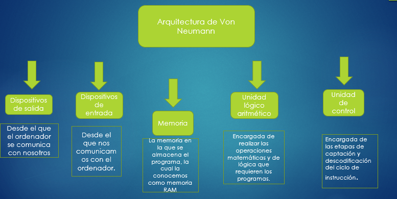
Arquitectura de Hardvard
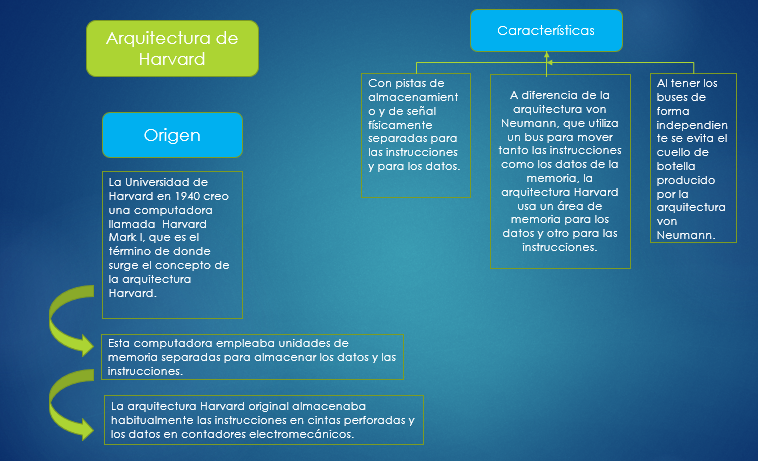
Arquitectura de ARM
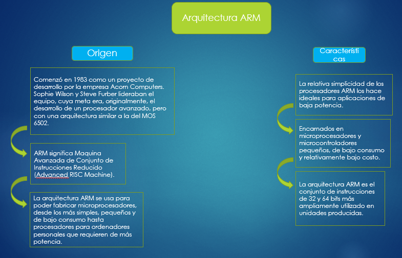
Arquitectura de Pipeline
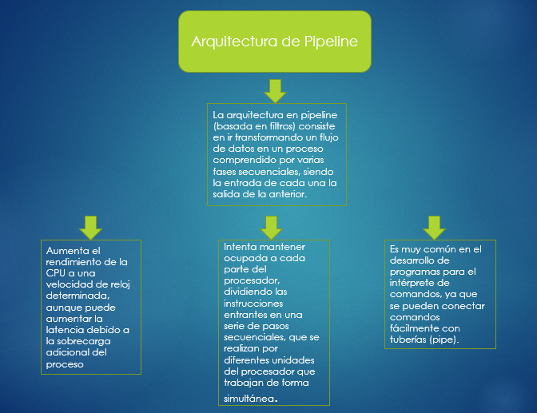 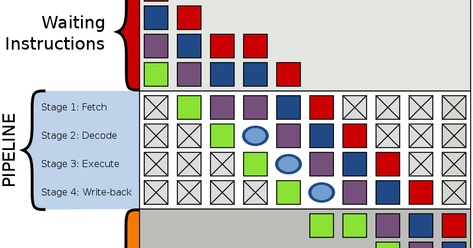Arquitectura Orientada a Servicios


Arquitectura Intel
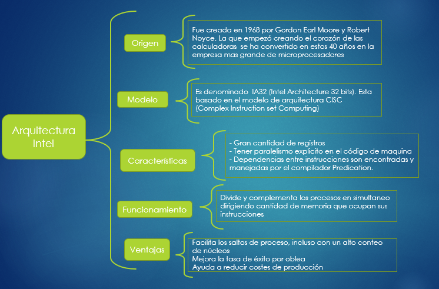
Arquitectura AMD
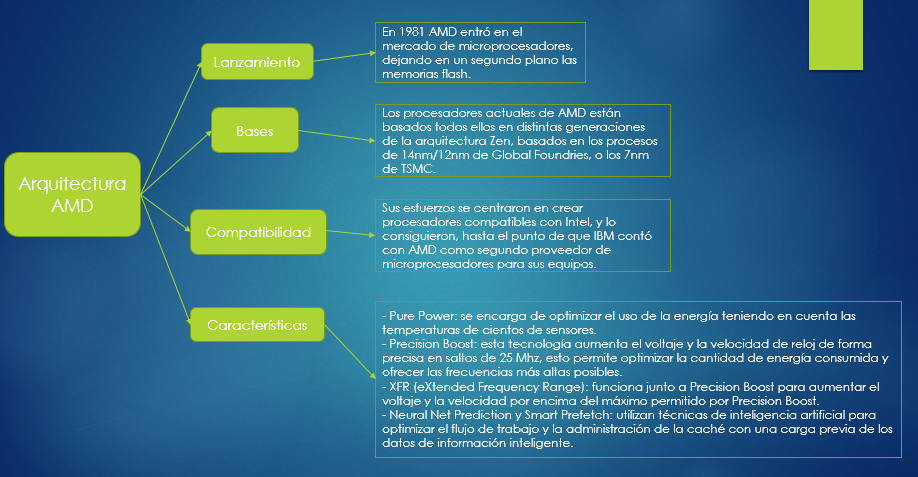
Arquitectura SPARC
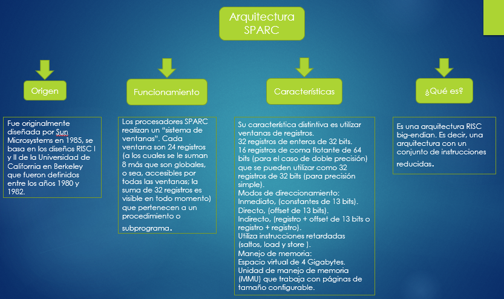
Arquitectura PowerPC
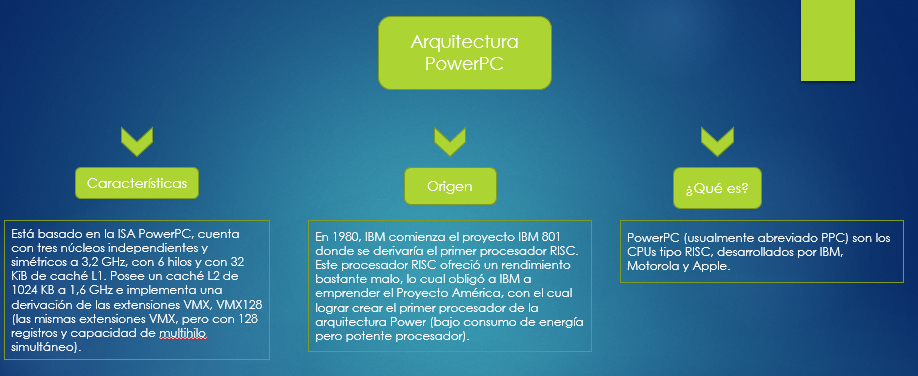
Sistema de numeración
Un sistema de numeración es un conjunto de símbolos y reglas que permiten representar datos numéricos. Los sistemas de numeración actuales son sistemas posicionales, que se caracterizan porque un símbolo tiene distinto valor según la posición que ocupa en la cifra.
Sistema de numeración decimal
El sistema de numeración que utilizamos habitualmente es el decimal, que se compone de diez símbolos o dígitos (0, 1, 2, 3, 4, 5, 6, 7, 8 y 9) a los que otorga un valor dependiendo de la posición que ocupen en la cifra: unidades, decenas, centenas, millares, etc. El valor de cada dígito está asociado al de una potencia de base 10, número que coincide con la cantidad de símbolos o dígitos del sistema decimal, y un exponente igual a la posición que ocupa el dígito menos uno, contando desde la derecha. En el sistema decimal el número 528, por ejemplo, significa: 5 centenas + 2 decenas + 8 unidades, es decir: 5*102 + 2*101 + 8*100 o, lo que es lo mismo: 500 + 20 + 8 = 528 En el caso de números con decimales, la situación es análoga aunque, en este caso, algunos exponentes de las potencias serán negativos, concretamente el de los dígitos colocados a la derecha del separador decimal. Por ejemplo, el número 8245,97 se calcularía como: 8 millares + 2 centenas + 4 decenas + 5 unidades + 9 décimos + 7 céntimos 8*103 + 2*102 + 4*101 + 5*100 + 9*10-1 + 7*10-2, es decir: 8000 + 200 + 40 + 5 + 0,9 + 0,07 = 8245,97

Sistema de numeración binario
El sistema de numeración binario utiliza sólo dos dígitos, el cero (0) y el uno (1). En una cifra binaria, cada dígito tiene distinto valor dependiendo de la posición que ocupe. El valor de cada posición es el de una potencia de base 2, elevada a un exponente igual a la posición del dígito menos uno. Se puede observar que, tal y como ocurría con el sistema decimal, la base de la potencia coincide con la cantidad de dígitos utilizados (2) para representar los números. De acuerdo con estas reglas, el número binario 1011 tiene un valor que se calcula así: 1*23 + 0*22 + 1*21 + 1*20 , es decir: 8 + 0 + 2 + 1 = 11 y para expresar que ambas cifras describen la misma cantidad lo escribimos así: 10112 = 1110
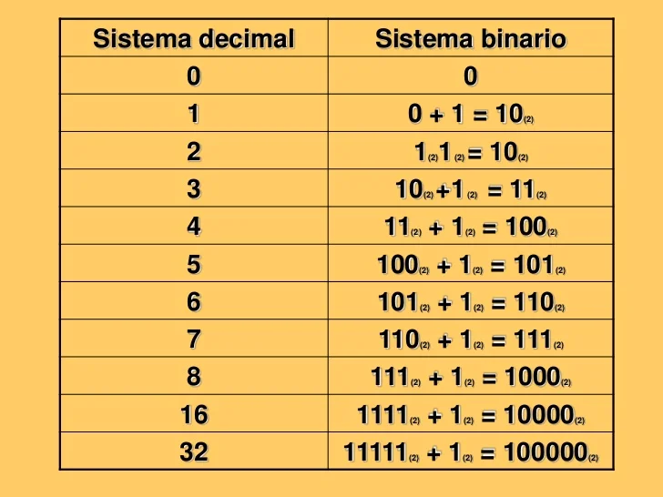Sistema de numeracion octal
El sistema octal es el sistema de numeración posicional cuya base es igual 8, utilizando los dígitos indio arábigos: 0,1,2,3,4,5,6,7. En informática a veces se utiliza la numeración octal en vez de la hexadecimal. Tiene la ventaja de que no requiere utilizar otros símbolos diferentes de los dígitos. Sin embargo, para trabajar con bytes o conjuntos de ellos, asumiendo que un byte es una palabra de 8 bits, suele ser más cómodo el sistema hexadecimal, por cuanto todo byte así definido es completamente representable por dos dígitos hexadecimales.
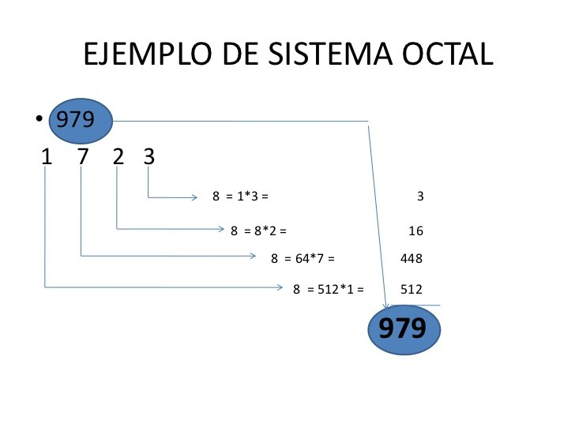Sistema Hexadecimal
El sistema hexadecimal (abreviado hex.) es el sistema de numeración posicional que tiene como base el 16. Su uso actual está muy vinculado a la informática y ciencias de la computación donde las operaciones de la CPU suelen usar el byte u octeto como unidad básica de memoria, debido a que un byte representa {\displaystyle 2^{8}}2^{8} valores posibles, y esto puede representarse como {\displaystyle 2^{8}=2^{4}\cdot 2^{4}=16\cdot 16=}2^{8}=2^{4}\cdot 2^{4}=16\cdot 16= {\displaystyle 1\cdot 16^{2}+0\cdot 16^{1}+0\cdot 16^{0}}1\cdot 16^{2}+0\cdot 16^{1}+0\cdot 16^{0}, que equivale al número en base 16 {\displaystyle 100_{16}}100_{{16}}; dos dígitos hexadecimales corresponden exactamente a un byte. En principio, dado que el sistema usual de numeración es de base decimal y, por ello, solo se dispone de diez dígitos, se adoptó la convención de usar las seis primeras letras del alfabeto latino para suplir los dígitos que faltan. El conjunto de símbolos es el siguiente: Se debe notar que las letras corresponden a los siguientes valores numéricos decimales: A = 10, B = 11, C = 12, D = 13, E = 14 y F = 15
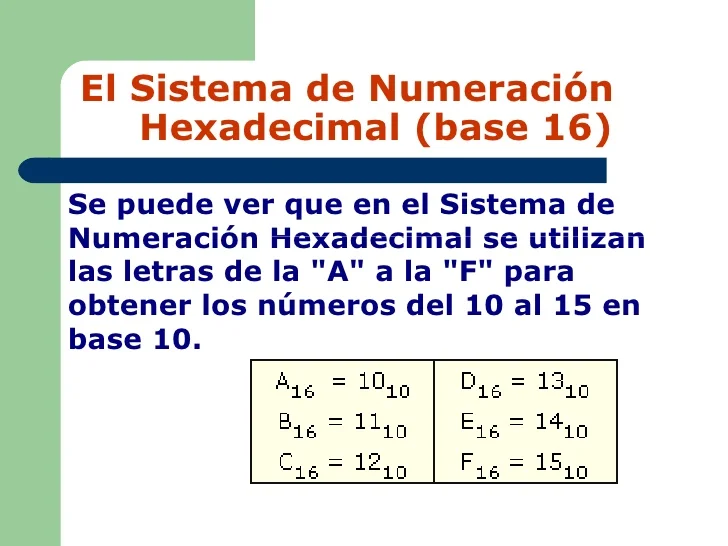Partes de la Placa Madre
La tarjeta, placa base o placa madre; es conocida comúnmente por su equivalente en inglés motherboard. Constituye la parte vital de la computadora, puesto que concentra todos los circuitos que permiten conectar los periféricos indispensables para su funcionamiento. El motherboard está contenido en una chapa con paneles que permite la conexión de dispositivos externos e internos; y zócalos que simplifican la instalación de otros accesorios. Entre las partes que podemos encontrar anexadas a la chapa, están el chipset (conjunto de chips), las ranuras de memoria RAM, el BIOS, los puertos de entrada, los conectores de disco, etc.
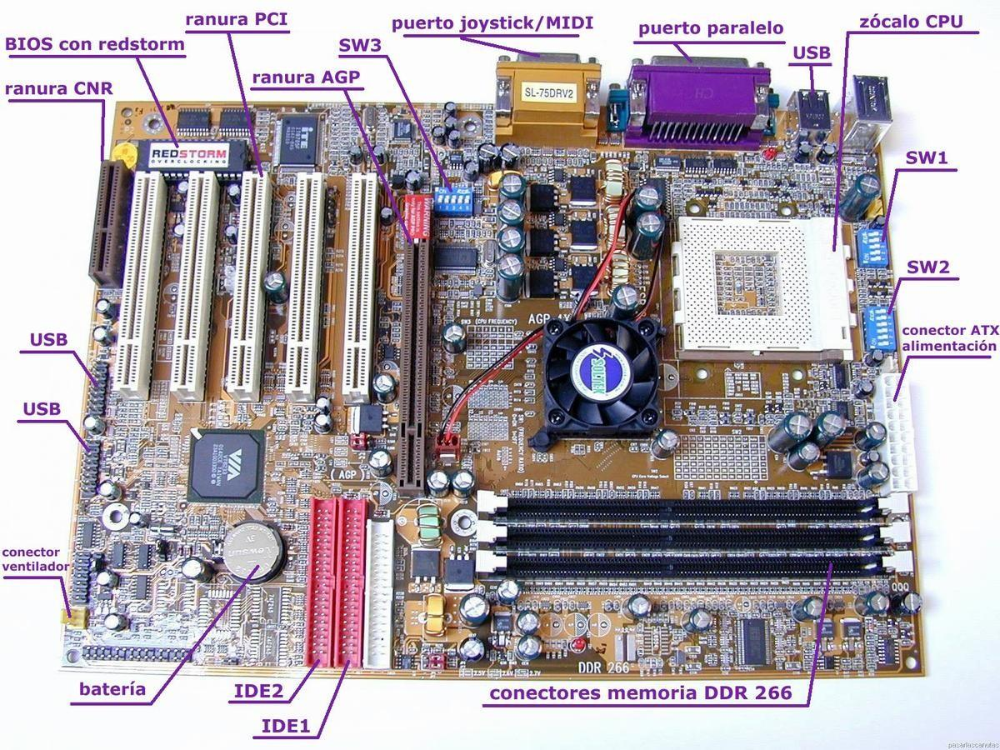Buses de datos
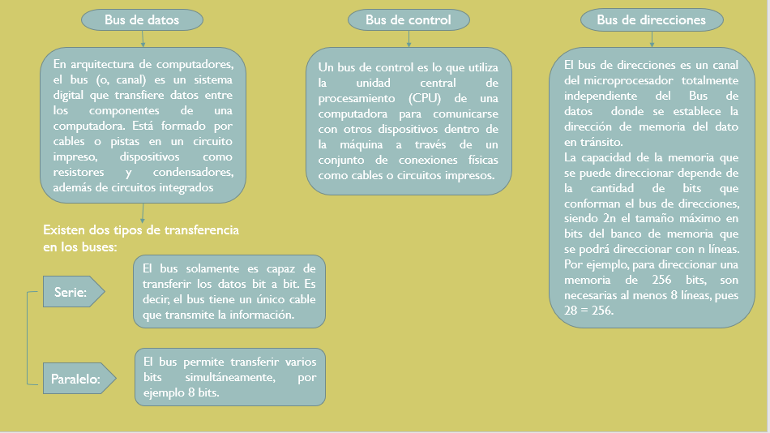
Procesadores
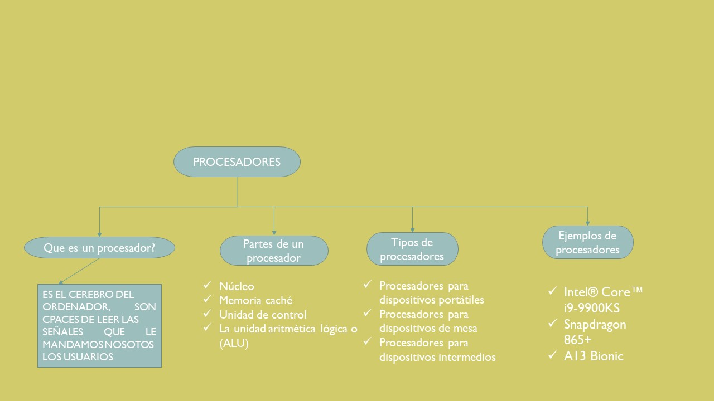Memoria RAM y caché
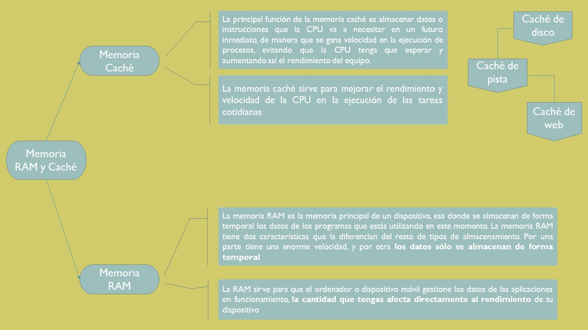BIOS
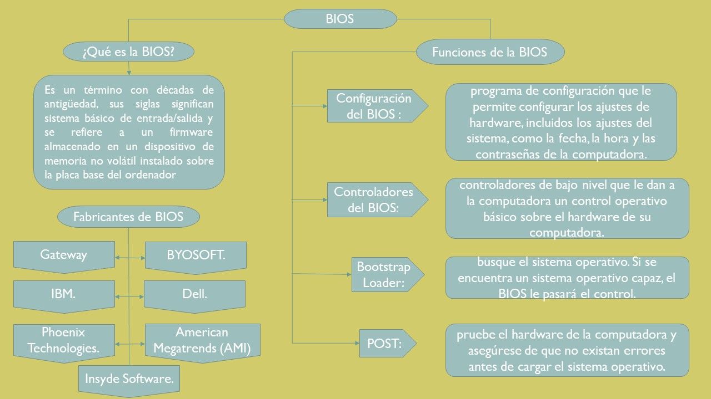Puertos de entrada y salida
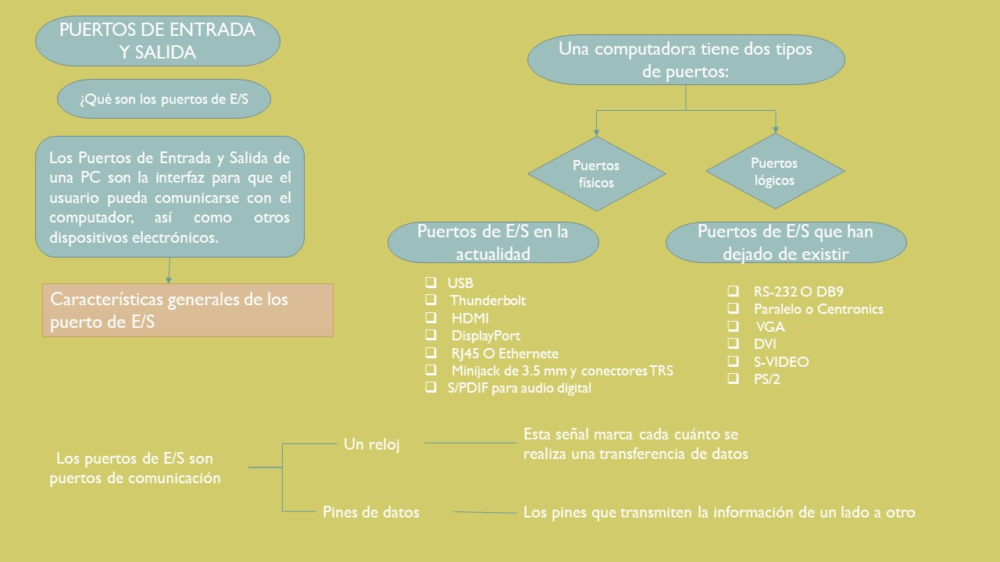Almacenamiento secundario y Respaldo
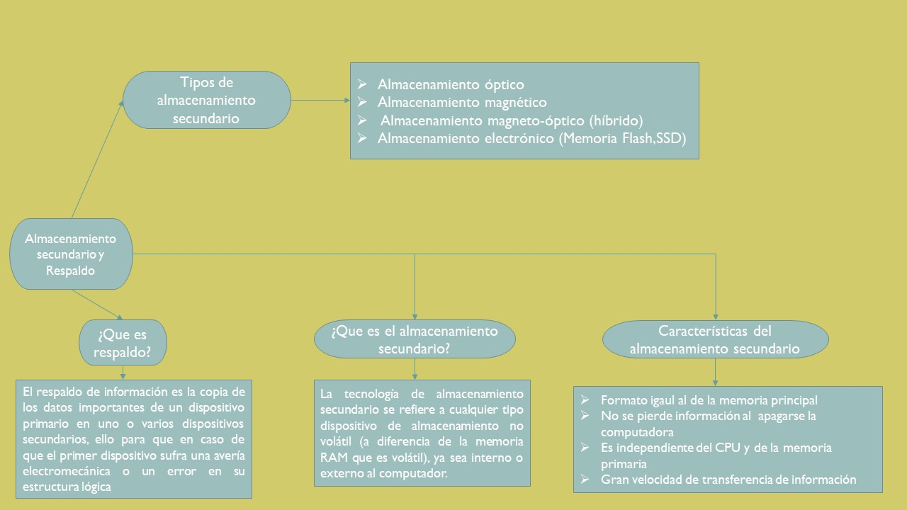Dispositivos de entrada y salida
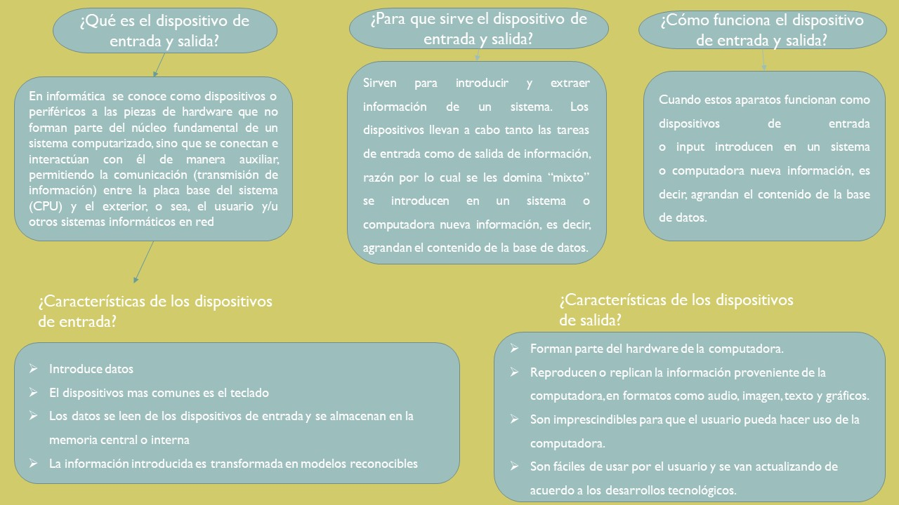
Firmware
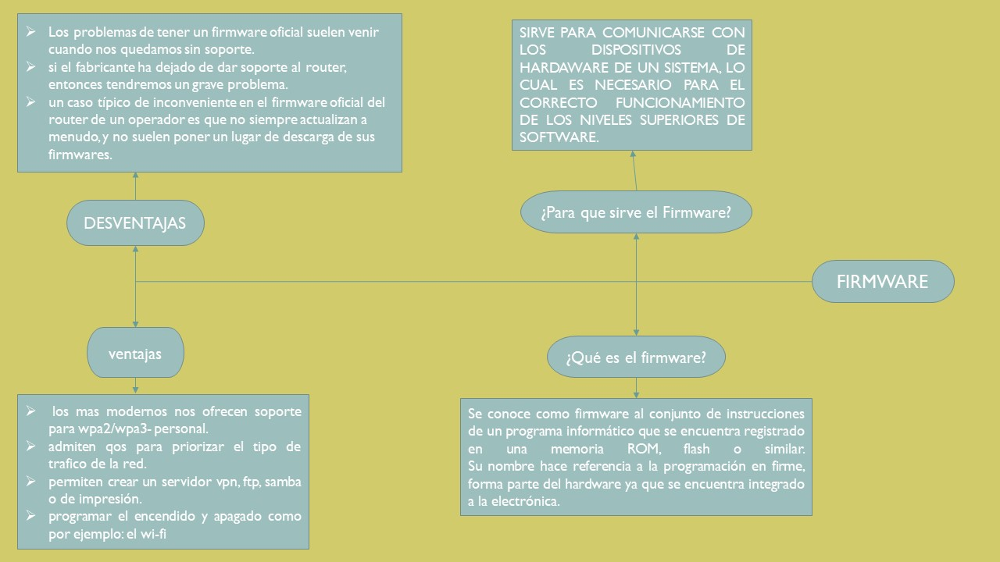
Controladores
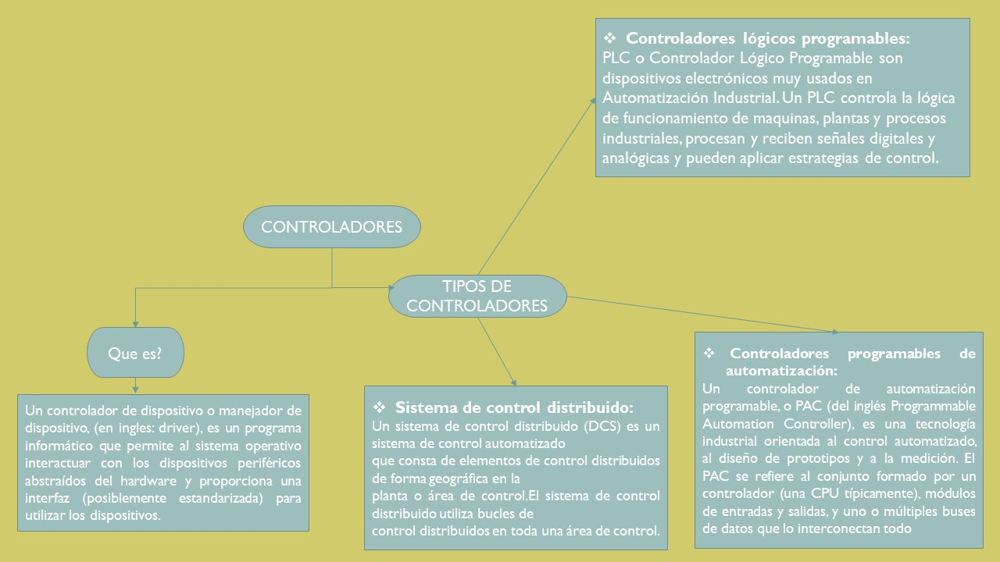Comunicación inalámbrica
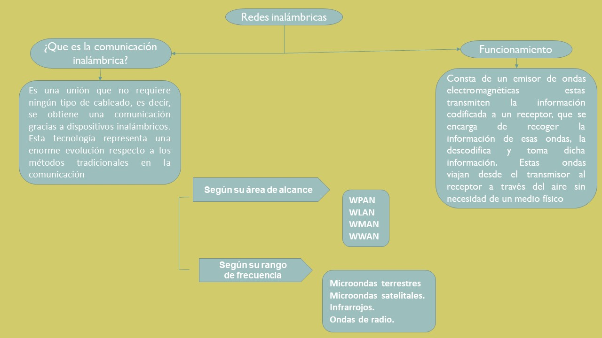Disco Duro
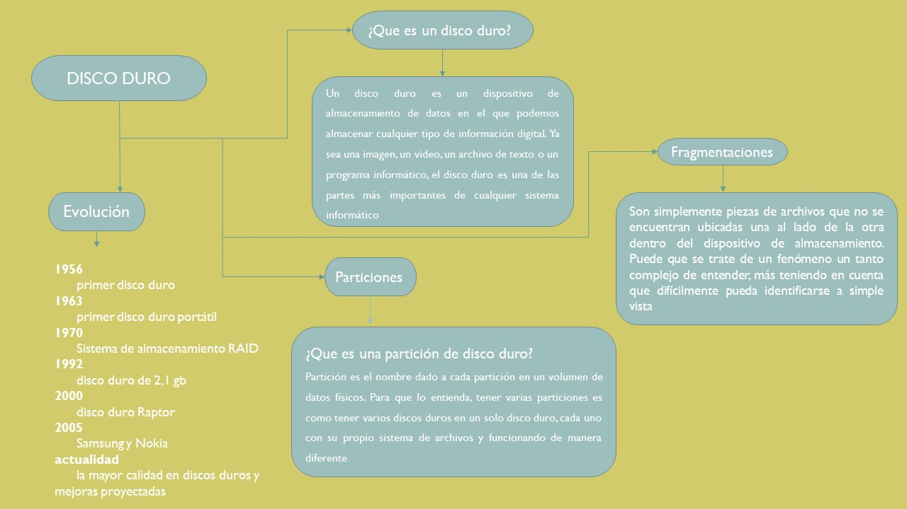Sistemas operativos
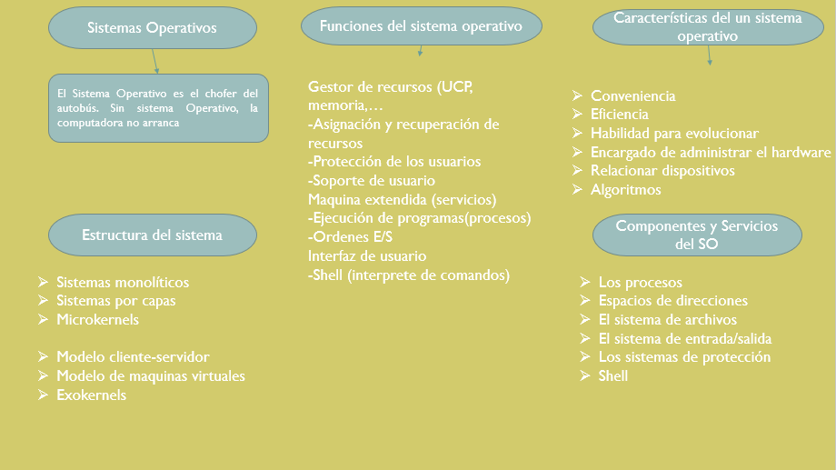